来源：https://qcnievo9yz2n.feishu.cn/docx/VUf7dfm74ohG0Vxk6Yecz0iinmh
各位生财有术的圈友们，大家好，我是 linyy。
很高兴收到飞掌柜领队的邀请，在航海期间和大家做个分享 。感谢生财官方能提供AI iOS APP 这么好的航海，也感谢航海期间所有教练的辛勤付出。说实话有些惶恐，在藏龙卧虎的圈子里，我只是一个刚起步的探索者。飞掌柜说，你上了好几次航海的好事墙，把你的经历和方法分享出来，就是对大家最大的价值 。
两年前我接触到生财，被无数圈友从0到1的故事深深吸引，但迟迟没有行动 。今年，我下定决心，清零过往，选择 AI App 这个赛道。
虽然我过去有研发经历，但已经多年不写代码，对客户端开发更是个新手。所以，大家完全可以把我当成一个 App 开发新人来看待 。这次，我想和大家分享一下，我是如何在航海期间，从零开始，将两个 App 成功上架 App Store，并获得初步的订阅收入的。希望能给大家带来一些有价值的信息和帮助 。
在分享具体的方法前，我们先看一下这次航海的成果。
我是 6 月 2 号正式开始开发的，用了一周左右的时间，我的两个 App 都顺利通过了审核并成功上架。之后，我持续进行版本的更新迭代，并获得了下图revenuecat所示的订阅收入 。
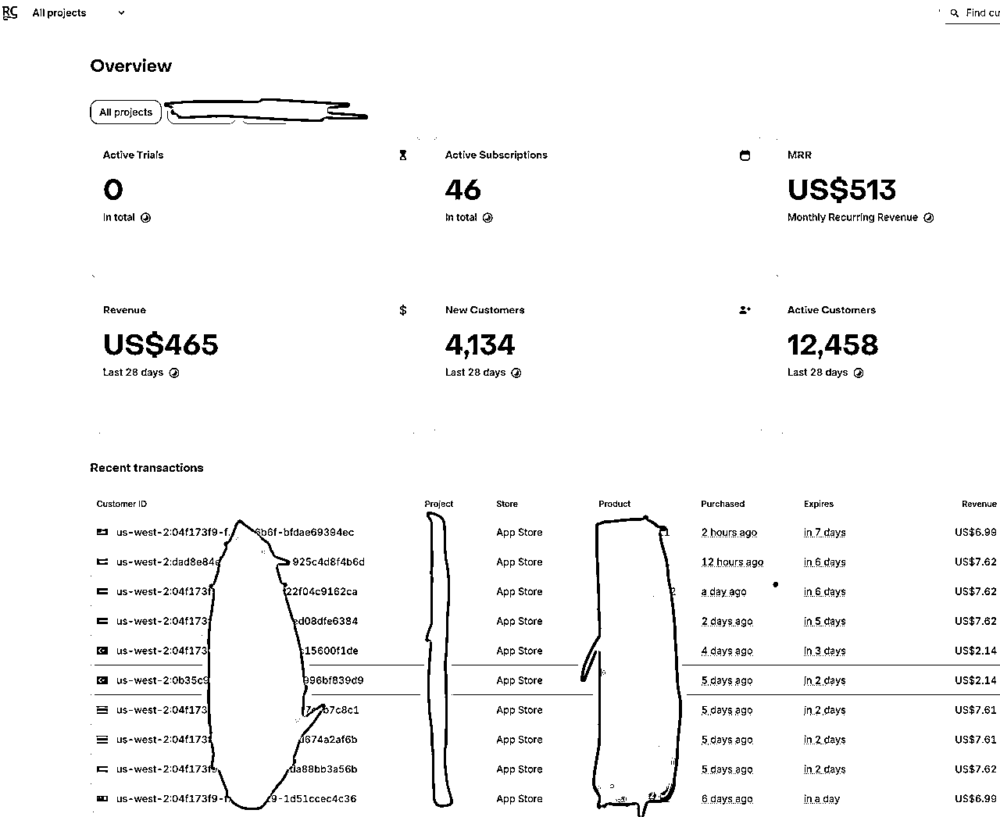
这个数据虽然不大，但它验证了我的核心想法：在当前阶段，基于 AI 能力开发一个产品已经不是最难的部分，真正的核心竞争力在于构建一套可复制的产品生命周期流程和方法论。
所以，在航海开始时，我没有一头扎进代码里，而是花更多时间思考如何构建我的这套系统 。接下来，我将毫无保留地复盘我这一个月的心路历程和方法论，希望能给在路上的你，提供一些有价值的“干货”。
这套方法论和系统构成如下图：
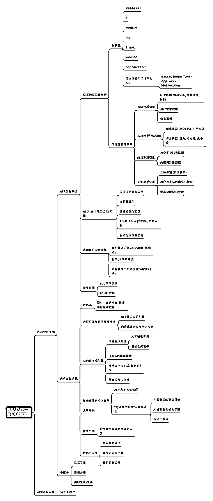
下面，我将从需求分析获取、App 开发、内容运营三个方面，来拆解我这套系统（当前还是自用的带bug版本）的具体构成。
万里长征第一步，是找到真实且有价值的需求 。为了解决这个问题，我利用 AI 能力，为自己构建了一个“AI 情报数据分析系统”。
我搭建的这套“AI情报数据分析系统”，就是我的导航地图 。它不是简单的浏览网页，而是一个7x24小时、自动化、多维度为我服务的市场需求监控体系。
它的工作流程分为三步：多数据源采集、自动化数据清洗与处理、智能化情报分析与提炼。
我构建的这个系统触角会伸向用户和竞品最活跃的地方，我将数据源分为两类：
采集的数据如下图：
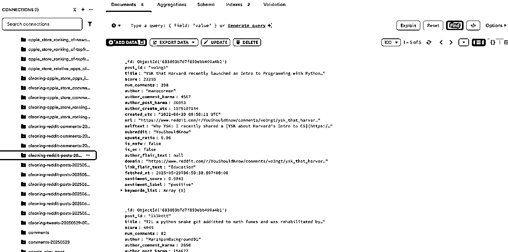
我还做了一个飞书 bot，监控数据采集任务：
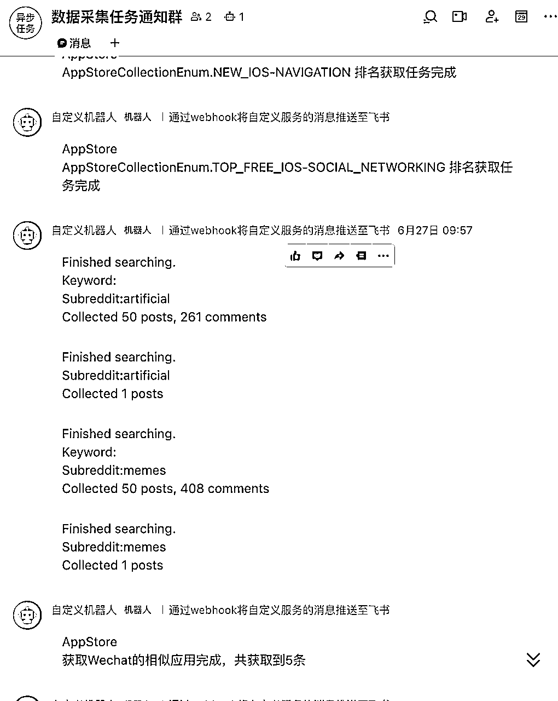
比如 caiai app 评论数据采集：
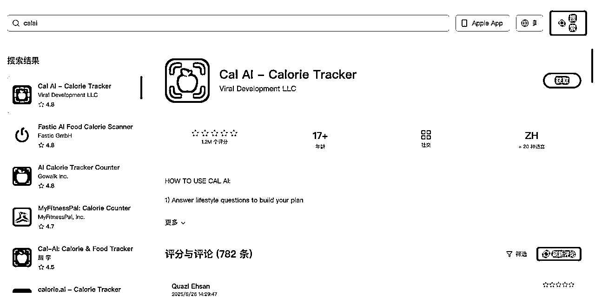
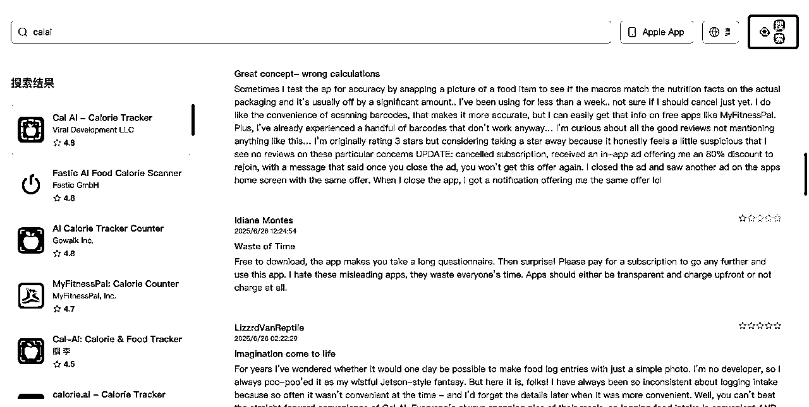
可以筛选出所有 1 星评论来研究：
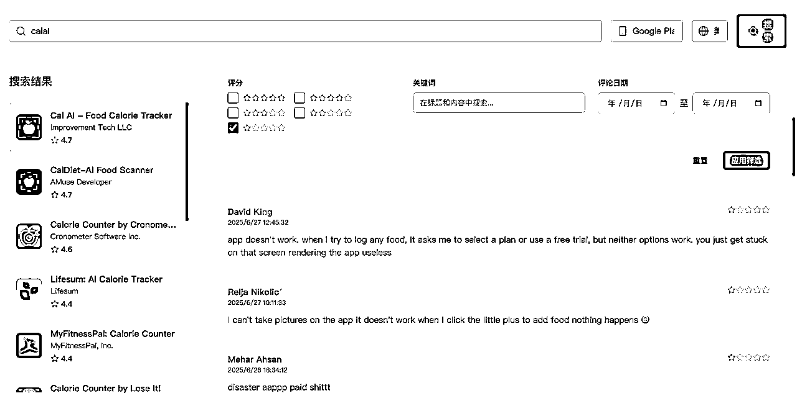
原始数据是杂乱无章的，就像未提炼的矿石。我需要构建流程自动对采集到的数据进行清洗和结构化处理：
这是最核心的一步，系统利用NLP（自然语言处理）等AI能力，从海量数据中提炼出真正的“情报”：
通过这套系统，最终会自动生成一份 “xxx产品情报需求机会评估报告”。这份报告会清晰地告诉我，哪个方向值得投入，它的市场有多大，我的切入点应该是什么。
通过这个系统，我能快速地筛选和验证我的想法，而不是凭空想象。
这是我写的自动化数据处理的管道：
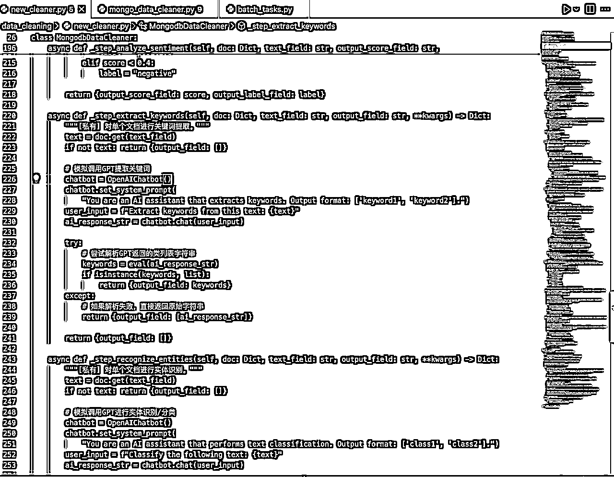
这是基于 gemini 2.5 pro 自动分析调研形成的报告：
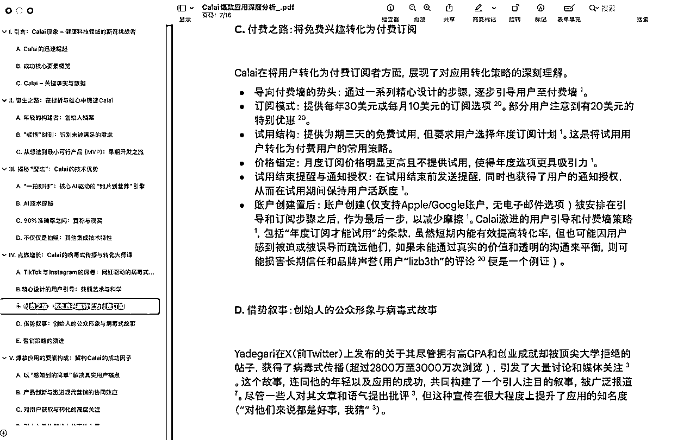
并可以对输出的报告进行网页概览阅读：
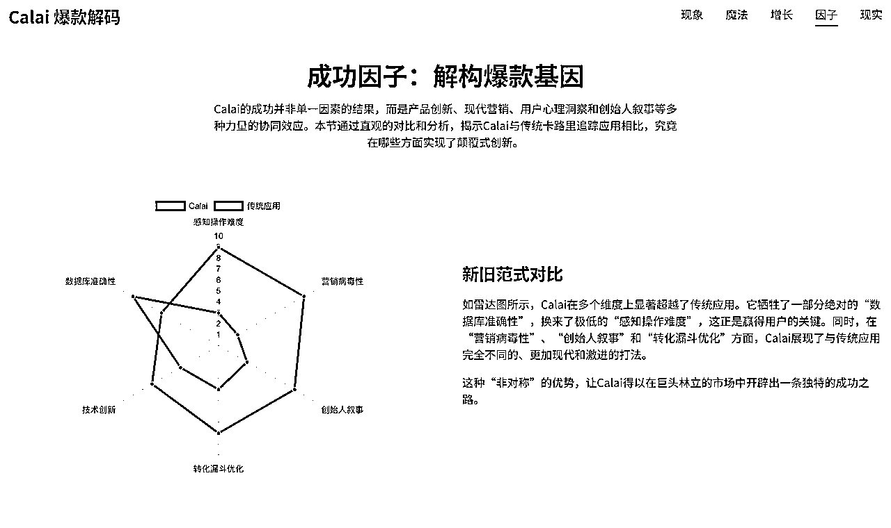
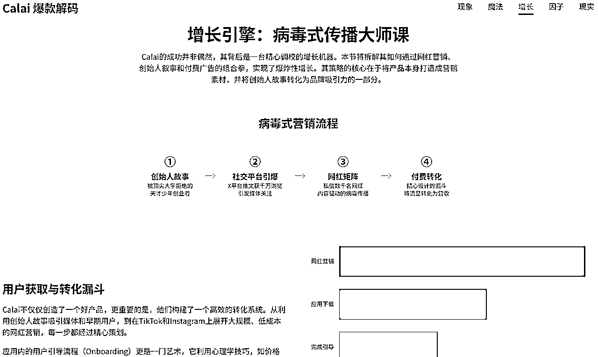
找到需求后，就进入了开发环节。我的目标是：
人只负责思考和决策，让 AI 最大化地承担执行工作。
我的开发流程如下：
我一开始使用 Cursor，它确实很优秀，但缺点是当请求量多的时候，模型的速率限制会变得很慢，非常浪费时间 。所以我后面我就切换到了 cline，虽然成本高了一点，但开发效率的提升是巨大的 。
最近几天我测试了 gemini cli，虽然还有些小 bug，但非常好用，最重要是每天有 1000 次免费调用 geimini 2.5 pro 的额度，比 cursor 一个月的调用额度还多。
我会先将详细的功能需求整理成 Markdown 文档 。然后，使用 cline 调用 Gemini 2.5 Pro，直接将这份文档喂给它，生成 App 的设计图 。效果非常好，基本能达到可直接用于开发的程度 。
有了设计图，开发就顺畅多了。我使用 cline 配合 Claude 4 Sonnet 进行编码，体验很丝滑。这里的关键是，需求一定要拆分清晰，按模块、按页面、甚至按功能点去提问，不要把整个项目一股脑地丢给它 。 AI 是你的程序员，而不是你的项目经理。
在开发的同时，就要想好变现模式。我主要采用的是订阅制 + 免费试用（Trial） 的模式。核心功能如 AIGC 内容生成、高级数据分析等都需要订阅解锁，以此来吸引用户付费。
App 上线只是开始，酒香也怕巷子深。我同样构建了一套 AI 内容运营系统，来实现低成本获客。
这套系统的核心思路是：自动化生产内容，并承接流量，最终引导至 App 内实现转化。
基于 gpt4.1 构建了一套高度自动化的 aso 系统，可以全面接管 appstoreconnect 的大部分信息的内容生成，并自动优化 aso
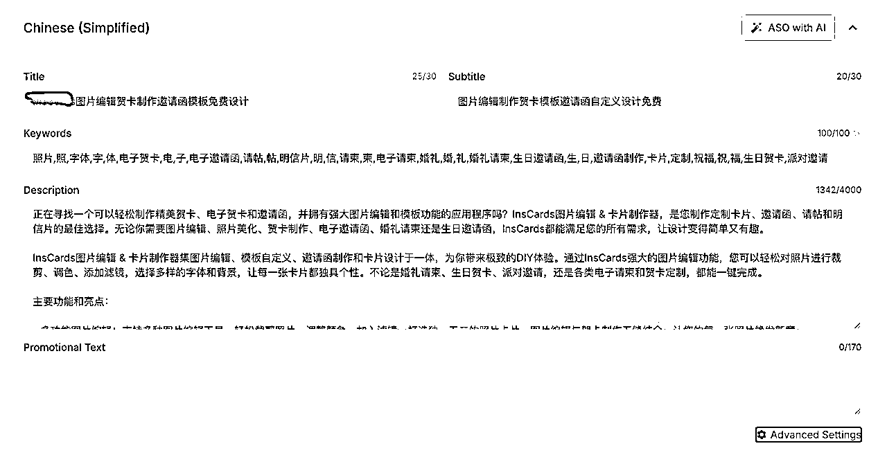
通过分析 App Store 的用户评论、社媒上的相关讨论，利用 NLP 技术提取用户的高频词和核心诉求，这为我们的内容创作指明了方向。
利用自动化工具，将 AI 生产的内容定时、定量地发布到 X、Instagram 等平台。甚至可以用 AI 机器人进行一些基础的评论互动，维持账号热度。
所有外部流量，最终都会引导到我们的 App 下载页或专门制作的落地页（Landing Page）。通过 App 内的优质内容和功能，配合清晰的付费引导，最终实现用户转化和留存。
最后，简单总结一下我这次航海过程中的心得体会：
我的分享就到这里。希望我这套从0到1的系统构建思路，能对正在路上的你有所启发。如果大家有任何问题，欢迎在评论区与我交流，我们一起探索，一起生财！